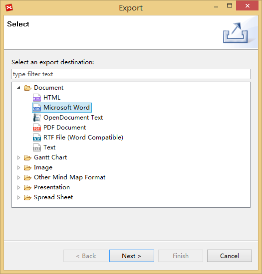
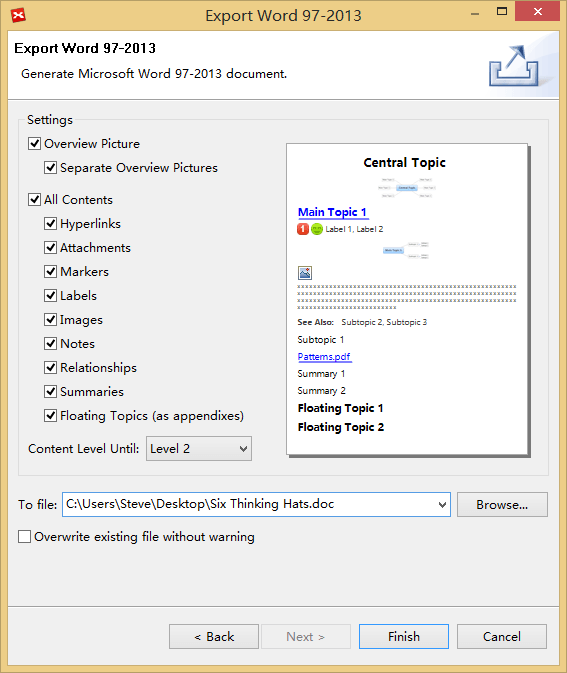
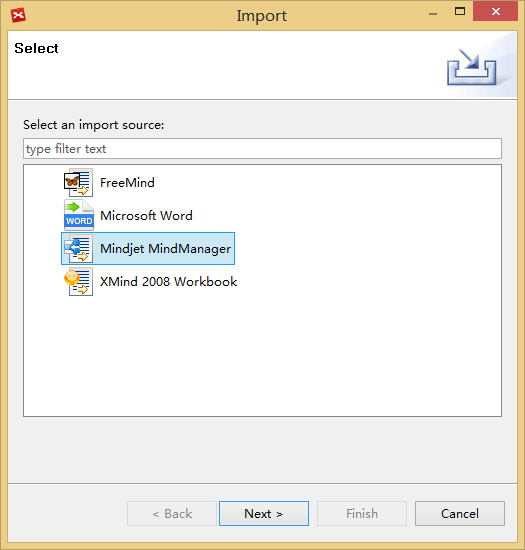
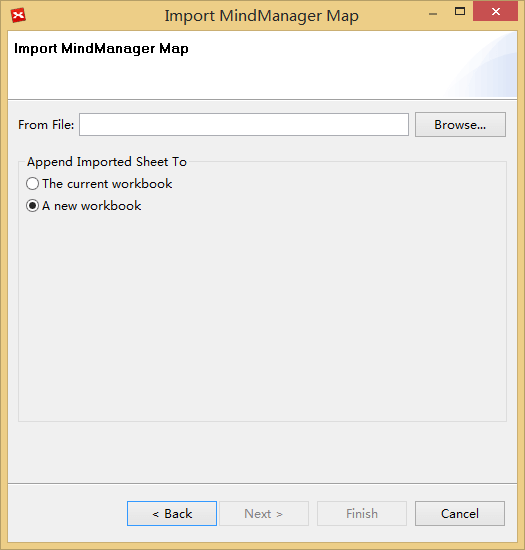

Export and Import
XMind Free can export the mind map to image and txt file. Also, it can import MindManager and FreeMind files. Working with XMind Plus/Pro, it supports 17 additional format export, like Word, PDF, Excel, PPT, Project, FreeMind, HTML and etc.
Export- Click 'File > Export' from the menu.
- Select the target format, like Word.
- Click 'Next' to continue.
- Choose the location by clicking 'Browser', and change the export settings as needed.
- Click 'Finish'.


Import
You can import four types of file formats into XMind: FreeMind file, Mindjet MindManager File, Microsoft Office Word file and XMind 2008 Workbook.
Import
- Click "File > Import" from the menu.
- Select the target file format, like Mindjet Manager.
- Browser to find source file and choose where to import it.
- Click 'Finish'.

